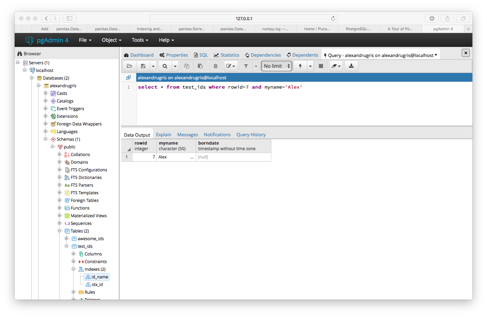
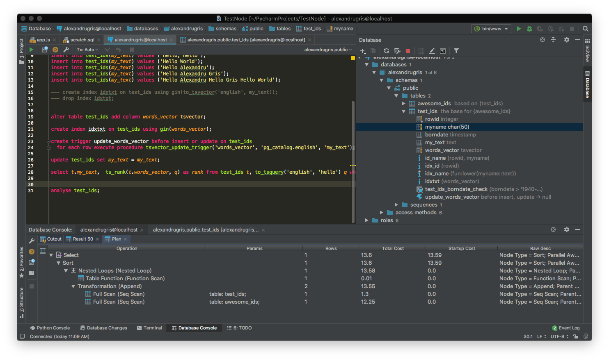
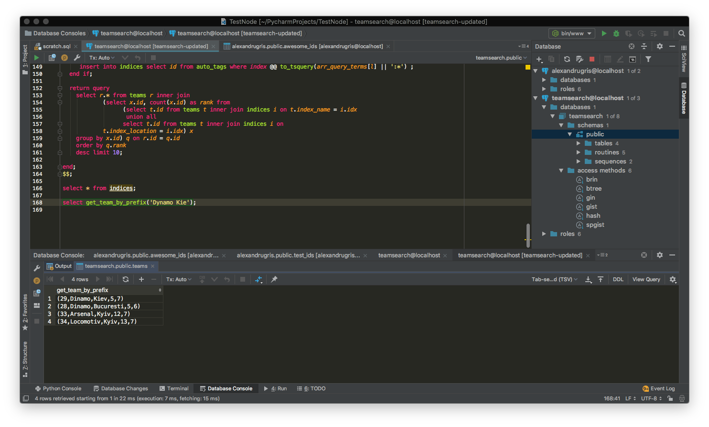

Postgres
An introduction to PostgreSQL, including an example of full text indexing and search at the end of the article.
Installation (Mac)
> brew install postgresql
Then, if upgrading from an older database version:
> brew postgresql-upgrade-database
To launch at login:
> brew services start postgresql
Or to start in console:
> pg_ctl -D /usr/local/var/postgres start
You may want to create a database:
> createdb your_database_name
or drop it
> dropdb your_database_name
or connect to it using psql, the command line client:
> psql your_database_name
or list the databases one can connect to:
> psql -l
Then the list of basic commands:
\c- shows current database and username or connects to another database\l- lists all databases\d- describes current database, with variants\dtfor tables,\dvfor views or\d table_nameto describe a specific table\c database_name- connects todatabase_name\x- transposes the results from queries\q- exit\p- shows the query buffer\e- opens the query buffer in vim for editing.\i- reads the query from a file\!- run shell commands frompsqlhelp <command>- inline help
A more involved example, exporting the results of a query to a CSV file (or, in the case below, dumping it to the stdout and piping it through more):
>psql alexandrugris -c '\copy (select * from test_ids) to stdout with csv' | more
The same command, if to is replaced with from, can be used to import csv files into postgres.
If I want to output to CSV the results of a complex query I have stored in a file, I can do as follows:
- Create a
tmp-export.sqlcontaining a complex query likecreate view tmp_export_view as select ... [complex sql query] - Run
psqlas follows:
psql alexandrugris -c '\i ~/tmp-export.sql' -c '\copy (select * from tmp_export) to stdout with csv' -c 'drop view tmp_export'
Creating a table with automatically generated IDs:
psql> CREATE TABLE test_ids(rowid serial, myname character(50));
will create one relation and one sequence:
alexandrugris=# \d
List of relations
Schema | Name | Type | Owner
--------+--------------------+----------+---------------
public | test_ids | table | alexandrugris
public | test_ids_rowid_seq | sequence | alexandrugris
(2 rows)
Inserting data into the table will automatically generate ID:
psql> INSERT INTO test_ids(name) VALUES('Alexandru Gris`);
The sequence values will be unique and reserved for each connection, thus one can do on each connection
psql> SELECT currval(`test_ids_rowid_seq`);
to get the latest inserted ID.
or
psql> SELECT nextval(`test_ids_rowid_seq`)
to reserve a unique ID only for this connection.
Character encoding
Postgres automatically encodes characters as UTF-8, thus there is no need for distinction between varchar and nvarchar.
Adding a new timestamp column
psql>ALTER TABLE test_ids ADD COLUMN borndate timestamp CHECK (borndate > '1/1/1940')
with the result
alexandrugris=# \d test_ids
Table "public.test_ids"
Column | Type | Collation | Nullable | Default
----------+-----------------------------+-----------+----------+-----------------------------------------
rowid | integer | | not null | nextval('test_ids_rowid_seq'::regclass)
myname | character(50) | | |
borndate | timestamp without time zone | | |
Check constraints:
"test_ids_borndate_check" CHECK (borndate > '1940-01-01 00:00:00'::timestamp without time zone)
The check keyword is beautiful addition to adding constraints to a column.
For date types there are special keywords like 'yesterday', 'today', 'tomorrow', 'now', 'Infinity' to make inserts simpler. Note: 'Infinity' can be used, for instance, to mark an unscheduled event in the future.
psql> insert into test_ids(myname, borndate) values ('New Born', 'yesterday');
To add timezone support, just use timestampz instead of timestamp when creating the table.
Table inheritance
psql> CREATE TABLE awesome_ids (description varchar(50), turned_on bit) INHERITS (test_ids);
then
psql> INSERT INTO awesome_ids(myname, description) VALUES ('Inherited', 'This is inherited');
then
psql> SELECT * FROM awesome_ids;
psql> SELECT * FROM row_ids;
And we get the following two results:
alexandrugris=# select * from awesome_ids;
rowid | myname | borndate | description | turned_on
-------+----------------------------------------------------+----------+-------------------+-----------
15 | Inherited | | This is inherited |
(1 row)
alexandrugris=# select * from test_ids;
rowid | myname | borndate
-------+----------------------------------------------------+----------------------------
7 | Alexandru Gris |
8 | Alexandru Gris |
9 | Alexandru Gris |
10 | Alexandru Gris |
12 | Alexandru Gris |
13 | New Born | 2018-09-22 00:00:00
14 | New Born 2 | 2018-09-23 12:30:13.424582
15 | Inherited |
(8 rows)
The inserted row appears in the select from the original table. If we want to see only the test_ids without the awesome_ids, we should add the only keyword to the select query:
psql>SELECT * FROM ONLY test_ids;
Performance tuning
pgAdmin is a great tool to play around and visualize query execution plans:

Postgres has the ability to set per-query parameters to optimize execution.
Inheritance is the foundation for vertical partitioning in Postgres and it brings the extra benefit of adding a semantic twist to it. One shouldn't try to add inheritance to an existing table, but rather create a new set of tables and move the data over to them.
Full Text Search
GIN (generalized inverted index) creation:
psql>ALTER TEST test_ids ADD COLUMN my_text TEXT;
psql>CREATE INDEX ftidx_myname ON test_ids USING GIN (to_tsvector('english'::regconfig, my_text::text));
Full read here
How does the to_tsvector() work?
psql>select to_tsvector('english', 'this is the best thing I have seen in my life');
outputs
'best':4 'life':11 'seen':8 'thing':5
where the number is the word in the sentence I entered as parameter. And a small variation:
psql>select to_tsvector('english', 'this is the best thing I have seen in my life, oh my life, again my life';
outputs
'best':4 'life':11,14,17 'oh':12 'seen':8 'thing':5
The next step, of course, is to query the ts_vector. For this, postgres offers the ts_query function together with a set of operators to match the vector and the query.
psql>select to_tsvector('english', 'this is the best thing I have seen in my life, oh my life again my life') @@ to_tsquery('english', 'life');
returns true.
Ranking the results:
psql>select ts_rank(v, q) from to_tsvector('english', 'this is the best thing I have seen in my life, life, life, super life') v, to_tsquery('english', 'life & best') q;
or, using an already existing table:
insert into test_ids(my_text) values ('Hello, Hello');
insert into test_ids(my_text) values ('Hello World');
insert into test_ids(my_text) values ('Hello Alexandru');
insert into test_ids(my_text) values ('Hello Alexandru Gris');
insert into test_ids(my_text) values ('Hello Alexandru Hello Gris Hello World');
select t.my_text, ts_rank(v, q) as rank
from test_ids t, to_tsvector('english', t.my_text) v, to_tsquery('english', 'hello') q
where v @@ q
order by rank desc;
If we want to make things even faster and skip the generation of tsvector at query runtime, we can do the following:
--- add a column with type tsvector
alter table test_ids add column words_vector tsvector;
--- index it
create index idxtxt on test_ids using gin(words_vector);
--- create a trigger to update this column with tsvectors
create trigger update_words_vector before insert or update on test_ids
for each row execute procedure tsvector_update_trigger('words_vector', 'pg_catalog.english', 'my_text');
--- force self update the table
update test_ids set my_text = my_text;
--- run the query on this particular column
select t.my_text, ts_rank(t.words_vector, q)
as rank from test_ids t, to_tsquery('english', 'hello') q
where t.words_vector @@ q
order by rank desc;
Analyse and Explain
ANALYZE collects statistics about the contents of tables in the database, and stores the results in the pg_statistic system catalog. Subsequently, the query planner uses these statistics to help determine the most efficient execution plans for queries.
EXPLAIN shows the execution plan of a statement.
From postgresql documentation, regarding cost:
| The most critical part of the display is the estimated statement execution cost, which is the planner's guess at how long it will take to run the statement (measured in cost units that are arbitrary, but conventionally mean disk page fetches). Actually two numbers are shown: the start-up cost before the first row can be returned, and the total cost to return all the rows. For most queries the total cost is what matters, but in contexts such as a subquery in EXISTS, the planner will choose the smallest start-up cost instead of the smallest total cost (since the executor will stop after getting one row, anyway). Also, if you limit the number of rows to return with a LIMIT clause, the planner makes an appropriate interpolation between the endpoint costs to estimate which plan is really the cheapest.

Triggers
- Before triggers: invoked before the constraints are checked
- Instead of triggers: the trigger can skip the insert / update operations
- Afer triggers: after the event has occured fuly
- For each row: called once for each row that is affected by the operation
- For each statement: once for each statement that is executed
Triggers for the same event will fire in alphabetical order.
A small example using before and after triggers, with conditions. The example consists of two tables, one named employees with employee's name and salary and an audit table where all changes to the salary are logged.
Table creation:
create table employees(
id serial primary key,
name varchar(50) unique,
salary numeric(6,2));
create table salary_audit(
emp_id integer references employees(id),
old_salary decimal(6, 2),
new_salary decimal(6, 2),
updated timestamp);
create index idx_emp_salary_audit on salary_audit(emp_id);
create index idx_emp on employees(LOWER(name));
A 'before' trigger to validate some complex business rules:
-- enforce some constraints, for proving how before triggers work
create or replace function emp_constraints() returns trigger language plpgsql as $$
begin
if new.name is null or new.salary is null then
raise exception '% employee cannot have name or salary null', new.id;
end if;
if new.salary < 0 then
raise exception '% employee cannot have negative salary', new.name;
end if;
return new;
end;
$$;
drop trigger if exists emp_constraints on employees;
create trigger emp_constraints before insert or update on employees
for each row execute procedure emp_constraints();
An after trigger, for when all business conditions have been checked, in order to log the changes. The trigger is only executed when changes to the salary occur, not when name changes.
-- trigger to insert in the audit table all the changes to this table
create or replace function salary_audit() returns trigger language plpgsql as $$
declare
old_salary integer default null;
begin
--- if insert, old does not exist
if TG_OP = 'UPDATE' then
old_salary := old.salary;
end if;
insert into salary_audit(emp_id, old_salary, new_salary, updated)
values (new.id, old_salary, new.salary, now());
return null; -- results are discarded since this is an after trigger
end;
$$;
-- execute audit trigger only when salary changes, not when name changes and only if different
drop trigger if exists emp_salary_audit on employees;
create trigger emp_salary_audit after update of salary on employees
for each row when (old.* is distinct from new.*) execute procedure salary_audit();
-- old does not exist, thus we need a separate trigger for insert
drop trigger if exists emp_salary_audit_insert on employees;
create trigger emp_salary_audit_insert after insert on employees
for each row execute procedure salary_audit();
And, of course, tests:
insert into employees(name, salary) values ('AG6', 100), ('OM7', 100);
update employees set salary = salary * 1.5 where LOWER(name) = LOWER('OM7');
-- see the increases for all employees in percentage change
select e.name, (-a.old_salary+a.new_salary)/a.old_salary as pct_change, a.updated
from employees e inner join salary_audit a
on e.id = a.emp_id
where a.old_salary is not null and a.old_salary > 0;
Updating views through triggers
We are going to continue the example above and extend it with a log of employee positions within our organization database. We want to be able to do the following:
insert into employee_current_position (emp_name, position_name) values ('AG10', 'Director');
insert into employee_current_position (emp_name, position_name) values ('AG11', 'Developer');
update employee_current_position set position_name='Developer' where emp_name='AG10';
select * from employee_current_position;
and get the last position of that particular employee. Also, we don't want the position to change its start / end date if the insert or update refers to the same position the employee currently holds.
First of all, the model:
create table positions (id serial primary key, name varchar);
create table employee_position(
id serial primary key,
emp_id integer references employees(id),
pos_id integer references positions(id),
s timestamp, e timestamp);
--- some seed values
insert into positions(name) values ('architect'), ('developer'), ('manager');
--- our view
create view employee_current_position as
select e.id emp_id, e.name emp_name, p.name position_name, ep.s start_date from
employees e
inner join employee_position ep on e.id = ep.emp_id
inner join positions p on ep.pos_id = p.id where ep.e is null;
If we try to insert directly into this view, Postgres will throw an error complaining that it doesn't know how to insert. Therefore, we need to create a trigger what will help us with our mission.
create or replace function update_into_emp_position() returns trigger language plpgsql as $$
declare
pos integer default null; -- id of the position
emp integer default null; -- id of the employee
begin
-- strict keyword to return exactly one; if it doen't exist => raise exception and exit
select id into strict emp from employees where name = new.emp_name;
-- try to see if we already have a position inserted in the database that matches our wish
select id into pos from positions where name = new.position_name;
-- if not, we create it
if pos is null then
insert into positions(name) values (new.position_name);
select currval('positions_id_seq') into pos; -- this will give us the id from the insert above
elsif (select count(ep.emp_id) from employee_position ep
where ep.emp_id = emp and ep.pos_id = pos and ep.e is null) > 0 then
return null; -- same position, no update. silent fail. another option would be to raise exception
end if;
-- set the end time to the previous position (if any) to current time
update employee_position ep set e = now() where ep.emp_id = emp and ep.e is null;
-- start a new position
insert into employee_position(emp_id, pos_id, s) values (emp, pos, now());
return new ; -- this does not matter
end;
$$;
-- create the trigger instead of insert or update
create trigger update_emp_pos instead of insert or update on employee_current_position
for each row execute procedure update_into_emp_position();
Note: similar behavior can be obtained through rules. If many rows are updated in a trigger which is invoked for each row, a better solution might be to use rules directly which basically behave as a rewriting of the original query.
A more comprehensive example:
We are going to do a fun exercise. Consider a set of teams from various cities. We are going to implement a function that takes string input and finds the best matches for that particular string. We are also going to consider synonyms, like (Bucharest, Bucuresti), (Kiev, Kyiv), (Dynamo, Dinamo). We are going to be able to correctly identify (New York Ranges) based on this input string. It will work fast even for incomplete strings, like Dyna.
Postgres has its synonyms dictionaries which can be altered when spliting into lexemes, but let's see how to implement such a dictionary ourselves.
The dictionary with synonyms. We are going to call them auto_tags below because we are going to tag the teams with them in an automatic manner.
create table auto_tags(
id serial primary key, -- the tag index, we will use this for tagging teams
index tsvector -- create a gin index on this
);
create index fts on auto_tags using gin(index);
--- The function below creates new tags or maps synonyms to existing tags (or creates a tag in the process)
create or replace function update_tags(t1 text, t2 text = null) returns integer language plpgsql as $$
declare
t1_q tsquery;
t2_q tsquery;
t1_v tsvector;
t2_v tsvector;
ret integer := 0;
begin
if t1 is null then
raise exception 'First term must not be null';
end if;
if t2 is null then
t2 := t1;
end if;
t1_q := plainto_tsquery(t1);
t2_q := plainto_tsquery(t2);
t1_v := to_tsvector(t1);
t2_v := to_tsvector(t2);
-- one of the two tags already exist in the database
if exists(select 1 from auto_tags where index @@ (t1_q || t2_q) limit 1) then
-- search / update for the left tag, no new tag is created
with t as (update auto_tags set index = strip(index || t2_v)
where id in (select id from auto_tags where index @@ (select t1_q && !!t2_q))
returning 1) select count(*) from t into ret;
-- search / update for the right tag
if ret = 0 then
with t as (update auto_tags set index = strip(index || t1_v)
where id in (select id from auto_tags where index @@ (select t2_q && !!t1_q))
returning 1) select count(*) from t into ret;
end if;
else
-- create the tags as they do not exist
insert into auto_tags(index) values (strip(t1_v || t2_v));
return 1;
end if;
return ret;
end;
$$;
--- The function below returns the index for a specifc tag.
--- If the tag is not found, it inserts it and returns its new index
create or replace function get_or_insert_tag(tag text) returns integer language plpgsql as $$
declare
ret integer default null;
begin
select id from auto_tags where index @@ plainto_tsquery(tag) limit 1 into ret;
if ret is null then
select update_tags(tag) into ret;
if ret <> 1 then
raise exception 'Something bad happened, procedure not correct. Should have at least 1 insert here.';
end if;
select currval('auto_tags_id_seq') into ret;
end if;
return ret;
end;
$$;
The functiosn above can be used as follows:
select update_tags('Dynamo', 'Dinamo');
select update_tags('Kiev', 'Kyiv');
select update_tags('Bucharest', 'Bucuresti');
select update_tags('Poly', 'Politehnica');
select update_tags('New York');
The function get_or_insert_tag() is used when inserting a new team. Let's look at the team table.
create table teams (
id serial primary key, -- teamid
name varchar(50), -- name of the team
location varchar(50), -- the location of the team
index_name integer references auto_tags(id), -- link to the auto_tags for name
index_location integer references auto_tags(id) -- link for auto_tags for location
);
-- since the index is basically an arbitrary token and range searches do not make sense for it
-- we use has indexes
create index idx_team_name on teams using hash(index_name);
create index idx_team_location on teams using hash(index_location);
-- trigger to update the tag (index in the auto_tags table)
create or replace function insert_or_update_teams() returns trigger language plpgsql as $$
begin
select get_or_insert_tag(new.name::text) into new.index_name;
select get_or_insert_tag(new.location::text) into new.index_location;
return new;
end;
$$;
create trigger trg_insert_or_update_teams before insert or update on teams
for each row execute procedure insert_or_update_teams();
insert into teams(name, location) values
('Poly', 'Iasi'),
('Poly', 'Timisoara'),
('Dinamo', 'Bucuresti'),
('Dinamo', 'Kiev'),
('Rangers', 'New York'),
('Steaua', 'Bucuresti'),
('Rapid', 'Bucuresti'),
('Arsenal', 'Kyiv'),
('Locomotiv', 'Kyiv'),
('Arsenal', 'London');
select * from teams;
select * from auto_tags; -- we see that new tags are created for the team names
And now, the function that will return the sorted list of the teams that are the most relevant for my search.
ate or replace function get_team_by_prefix(prefix text) returns setof teams language plpgsql as $$
declare
arr_query_terms text array;
l integer;
begin
select string_to_array(prefix, ' ') into arr_query_terms;
l := array_length(arr_query_terms, 1);
create temp table if not exists indices (idx integer) on commit drop;
truncate indices;
for i in 1 .. l-1 loop
insert into indices select id from auto_tags where index @@ plainto_tsquery(arr_query_terms[i]);
end loop;
if char_length(arr_query_terms[l]) > 0 then
insert into indices select id from auto_tags where index @@ to_tsquery(arr_query_terms[l] || ':*') ;
end if;
return query
select r.* from teams r inner join
(select x.id, count(x.id) as rank from
(select t.id from teams t inner join indices i on t.index_name = i.idx
union all
select t.id from teams t inner join indices i on
t.index_location = i.idx) x
group by x.id) q on r.id = q.id
order by q.rank
desc limit 10;
end;
$$;
with usages:
select get_team_by_prefix('Kie'); -- will return everything that is Kiev and Kyiv
select get_team_by_prefix('Kyi'); -- will return everything that is Kiev and Kyiv
select get_team_by_prefix('Dynamo Kyi'); -- will return Dinamo Kiev, followed by a the dinamo bucharest and other teams from Kiev
select get_team_by_prefix('New York Ran'); -- will return Rangers New York
